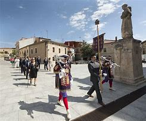
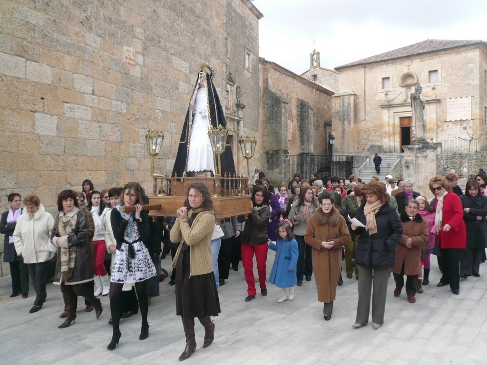

Es un honor saludarles y darles la bienvenida a las fiestas de Santo Domingo de Guzmán y la Beata Juana de Aza. Estas fechas en las que celebramos al Patrón de la provincia de Burgos van a ser las primeras en las que no esté con nosotros nuestro querido Padre Basilio, quien con tanta ilusión preparaba la novena y los actos para celebrar a Santo Domingo. Es oportuno que estas fiestas sean también un homenaje para él y para toda la comunidad de Dominicos.
Desde la concejalía de festejos y cultura se ha preparado un programa que esperamos sea del gusto de todos; niños, jóvenes y mayores. Muchas gracias a los que han colaborado con el Ayuntamiento; a los Padres y Madres Dominicos que se ocupan de los actos religiosos, a los Quintos, asociaciones culturales y Peñas por su valiosa contribución en las actividades festivas y culturales.
Este año, estamos especialmente orgullosos de compartir con todos vosotros el éxito del primer festival LavandafestCaleruega. Gracias a la fantástica organización que ha trabajado con ilusión y entusiasmo desde el primer minuto. Gracias a la Cooperativa la Burgalesa por dejarnos mostrar e “invadir” sus campos; gracias a los visitantes por hacerlo de una manera tan cívica y respetuosa. Gracias a la colaboración de los voluntarios que tanto han ayudado para que todo saliera perfecto. Gracias a todos los que se atreven a proponer y llevar a cabo iniciativas culturales y empresariales porque son imprescindibles en nuestra población.
Desde estas líneas os invitamos a todos a disfrutar de estos días de celebración, a vivir intensamente cada momento y a compartir la alegría con amigos y familiares. Os pedimos también que cuidéis de las instalaciones, tratad con respeto el entorno y colaborad en la medida de lo posible para que todo transcurra sin contratiempos.
Que estas fiestas sean un reflejo de la unidad y el espíritu comunitario que nos caracteriza. Disfrutemos de cada actividad, cada evento y cada encuentro, haciendo que estas fiestas queden guardas en nuestros mejores recuerdos.
¡Felices fiestas a todos!

Procesión Santo Domingo de Guzmán.

Procesión Santa Juana de Aza.
Programa de Fiestas 2024
26 de JULIO, viernes: Bingo
27 de JULIO, sábado: Teatro “El genio alegre” de los Hermanos Álvarez Quintero
29 de JULIO, lunes: Acampada y Gymkana en el centro de interpretación de la naturaleza “Las Loberas”
31 de JULIO, miércoles: Karaoke
1 de AGOSTO, jueves: Día de la Tercera Edad. Novena dedicada a nuestros mayores. Baile de tarde. Cena de confraternidad.
2 de AGOSTO, viernes: Día del Niño. Parque infantil. Fiesta de la espuma.
Destacadas Actividades en Honor a Santo Domingo de Guzmán y Santa Juana de Aza
7 de AGOSTO, miércoles (Vísperas de Santo Domingo de Guzmán):
Pregón de Fiestas
Imposición de las bandas a la Reina y Damas
Salida de los Santos
Pasacalles con la Charanga Lesaka
Baile público por la Orquesta Radar
Verbena
Chocolatada
8 de AGOSTO, jueves (Solemnidad de Santo Domingo de Guzmán):
Dianas y pasacalles
Misa
Pelota a Mano
Baile público por la Orquesta Malassia
Verbena
Chocolatada de los Quintos 2024
17 de AGOSTO, sábado (Víspera de Santa Juana de Aza):
Baile público por la Orquesta “Jaque Mate”
Verbena
Chocolatada de los Quintos 2024
18 de AGOSTO, domingo (Fiesta en honor a Santa Juana de Aza):